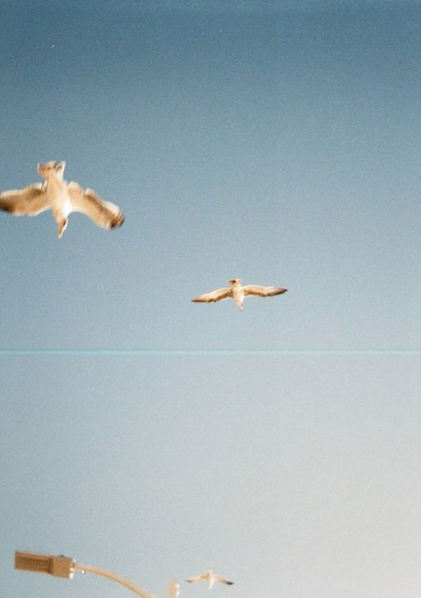
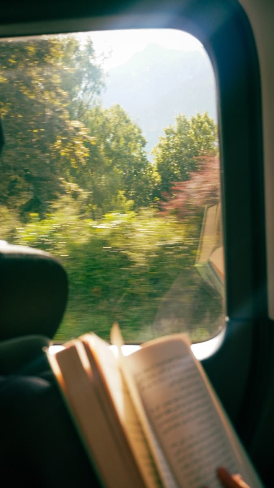
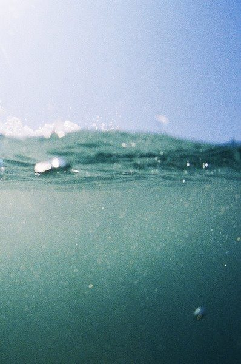

Toda relação tem três histórias.
A sua, a do outro e a que nasce entre vocês.
Aqui a gente estuda a terceira história. O Clube 03 é uma comunidade para olhar com mais clareza para as relações que fazem a sua vida: com quem você ama, com o trabalho, com o dinheiro, com a própria vida.
Quero entrar no clubeUm encontro ao vivo por semana
Um curso de cada vez
Todo o acervo gravado
tudo numa assinatura
Do que se fala no clube
De amor, claro. E também do trabalho que ocupa a casa inteira, do dinheiro que vira briga, da amizade que esfriou sem ninguém perceber, daquela fase em que a gente se sente perdido.
Tudo isso acontece numa relação: com alguém, com alguma coisa ou com a gente mesmo.



O que você leva
Repertório
Para dar nome ao que antes era só incômodo.
Palavras, ideias e histórias que ajudam a entender o que acontece entre as pessoas.
Clareza
Um olhar mais claro para as suas relações e, se você atende, para as dos seus pacientes.
Ver a terceira história, a que nasce entre as pessoas, e não só a de cada um.
Companhia
Gente com quem pensar sobre isso sem precisar fingir que já entendeu tudo.
Uma conversa que continua depois do encontro, no grupo e nos comentários.
Como funciona o clube
Um curso de cada vez, com encontros toda semana. A leitura atravessa a conversa do começo ao fim.
Agora no clube
O próximo curso
Tema, datas e leituras anunciados no lançamento.
O acervo
Cada curso fica gravado para você assistir quando quiser. Quem assina tem acesso a todos, desde o primeiro dia.
toque numa capa para virar · arraste para o lado

Quem conduz
Sou o Ilo, psicólogo e um curioso da vida e das relações humanas. No clube, levo o que estou estudando e a gente pensa junto.
Francisco Ilo Lima Filho, CRP 11/17085. Especialista em Terapia de Aceitação e Compromisso, com formação em Psicoterapia Analítica Funcional e em Terapia Comportamental Integrativa de Casais. franciscoilo.com · @fco.ilo
R$49/mês
o seu nome aqui
Puxa uma cadeira
- Um encontro ao vivo por semana, de 1h30, numa terça ou num sábado de manhã
- A leitura de cada encontro
- Todos os cursos gravados, desde o primeiro dia
- O grupo no WhatsApp e os comentários em cada encontro
- Certificado de cada curso, a pedido
Pela Hotmart. Cancele quando quiser.
Perguntas
Todo mundo precisa de um terceiro lugar.
Quero entrar